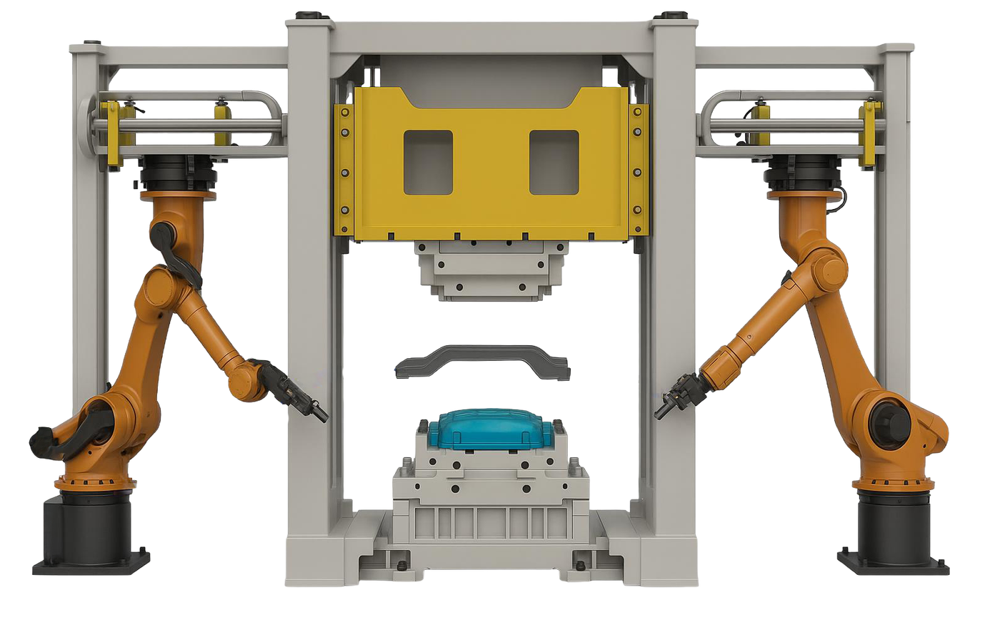
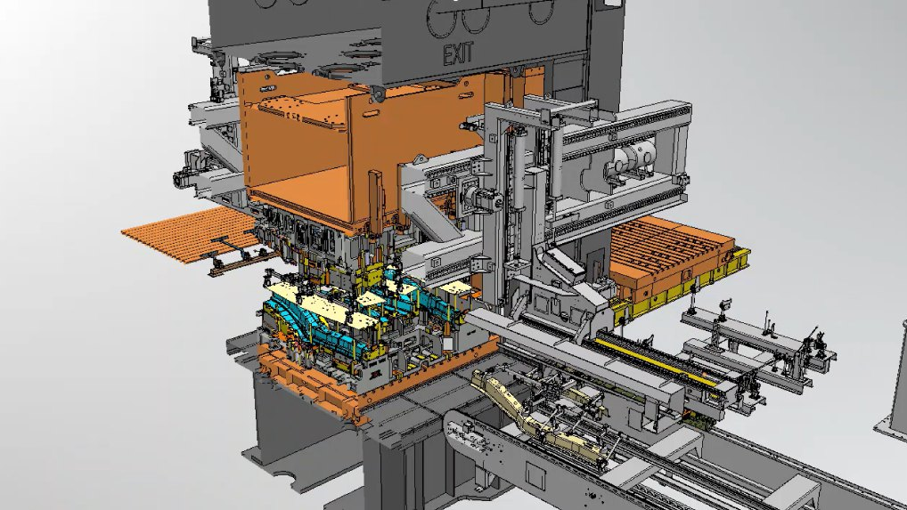
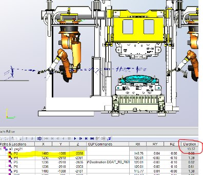
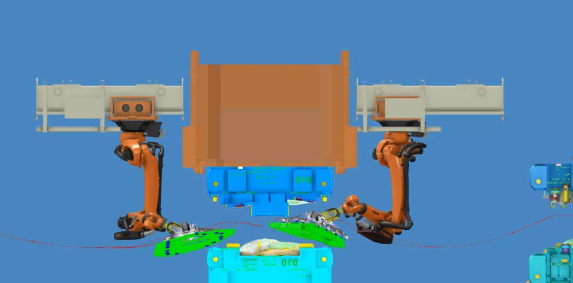

Machine Transfer Optimization & Virtual Twin Development
Optimizing Automation, Tooling, and Motion Efficiency

Is Your Press Transfer System Optimized for Maximum Performance?
The challenge
Typical issues we see
- Inefficient die design causing slow transfer times and inconsistent part quality
- Suboptimal press timing leading to unnecessary downtime and production delays
- Unoptimized robot transfer paths reducing strokes per minute (SPM)
- Inefficient offline programming, increasing setup time and reducing throughput
Key Inputs Required for Optimal Press Simulation
Die Models & Tooling Designs
Ensuring compatibility and efficiency in the transfer process
Press Specifications & Motion Data
SPM, press bed size, and stroke height
Production & Performance Goals
Required cycle times and quality benchmarks
Robot & EOAT Specifications
Defining transfer speeds, reach limits, and gripper capabilities
Material Flow & Layout Constraints
Evaluating space utilization and part handling strategies
Deliverables: Simulation-Validated Press Optimization Solutions
Transfer Simulation Model
A high-fidelity 3D simulation of robotic press transfers that optimizes motion paths, timing, and press-robot coordination to achieve peak transfer efficiency.
Transfer Robot Offline Programming Package
Delivers pre-optimized robot motion paths, release points, and interference avoidance logic to minimize setup time and eliminate on-site programming delays.
Press Timing & Stroke Optimization Report
Analyzes synchronization between the press and transfer robots to maximize strokes per minute (SPM), reduce idle time, and boost overall press productivity.
Static Cycle Time Chart & Motion Timing AVI File
Visualizes detailed press cycle sequences, enabling clear review of motion improvements through static charts and simulation video files.
Die Design Feedback for Transfer Optimization
Identifies design enhancements to stamping dies that improve transfer reliability, reduce misfeeds, and support faster, smoother part movement.
Bill of Materials (BOM) for EOAT & Tooling Adjustments
Includes a comprehensive BOM for EOAT components, grippers, and any required tooling modifications, streamlining sourcing and cost control.
EOAT 3D Model Validation
Provides accurate 3D CAD models of EOAT to ensure alignment with press operations and minimize risk during part transfer.
Gripper System Drawings & Compatibility Review
Supplies 2D drawings and performs compatibility analysis to ensure precise part handling and minimal adjustment needs.
In practice
Simulation and analysis outputs



Next step
Increase strokes per minute (SPM) and eliminate inefficiencies with optimized press automation strategies.
Tell us about your line, your targets and your constraints. We come back with a scoped proposal, not a sales call.